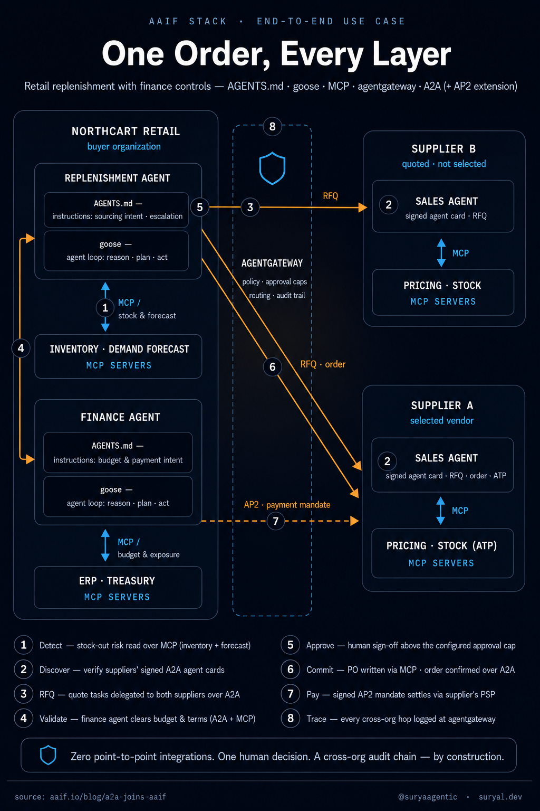

On August 17, the Agentic AI Foundation announced that Agent2Agent (A2A) — the open standard for inter-agent communication — is joining AAIF as a hosted project. It would be easy to read this as governance paperwork: a protocol moving from one Linux Foundation shelf to another. It isn't. This is the moment the open agentic stack stopped being a collection of adjacent projects and became a stack in the real sense — five layers, distinct responsibilities, one neutral home.
I want to walk through what A2A actually is, how we got from the "A2A vs MCP" flame wars of April 2025 to this announcement, what each layer of the stack now does — and then, because layer diagrams are cheap, run a real transaction through the whole thing and watch what each layer does when money is on the line. I'll close with the part I care most about: the layer that still isn't there.
01The problem A2A exists to solve
Teams deploying multi-agent systems in production kept hitting the same wall, and it wasn't the agents. An agent built on one framework couldn't hand work to an agent built on another without custom integration code written for that specific pairing. Every new vendor relationship meant repeating the integration work from scratch. It's the classic N×M problem: N frameworks times M vendors, each seam hand-soldered.
Anyone who lived through the pre-standard era of enterprise integration will recognize the shape of this. We solved agent-to-tool sprawl with MCP. Agent-to-agent sprawl needed its own answer.
A2A's answer is structurally simple. An agent publishes an agent card — a structured, machine-readable description of what it can do and how to reach it. Other agents read the card, discover capabilities, negotiate the interaction, and delegate tasks. No human brokers the handoff. The exchange is structured, observable, and — crucially — framework-agnostic. Your agent doesn't need to know or care what mine is built on.
02Sixteen months from launch to layer
Google launched A2A in April 2025, and the immediate reaction from a big chunk of the timeline was to frame it as a competitor to MCP. I understand why it happened — two protocols, both about agents talking to things, arriving within months of each other — but it was always a category error. MCP is a vertical connection: it wires an agent into its tools, data sources, applications, and services. A2A is a horizontal connection: it wires independent agents to each other. One is about capability access; the other is about peer interoperability. You need both, in the same system, doing different jobs.
What settled the debate wasn't argument. It was a sequence of consolidation moves:
Google donated A2A to the Linux Foundation in June 2025, with AWS, Cisco, Microsoft, Salesforce, SAP, and ServiceNow among the founding organizations. Direct competitors co-governing a protocol on day one is the strongest signal a standard can send.
In August 2025, IBM's Agent Communication Protocol merged into A2A. When a serious alternative folds itself into the standard rather than competing with it, the field is telling you it wants one answer, not a format war.
In March 2026, A2A v1.0 shipped — the first stable specification. It brought multi-protocol bindings and version negotiation, multi-tenancy, and signed agent cards for cryptographic identity verification. That last item matters more than its bullet-point billing suggests, and I'll come back to it.
And now, August 2026: A2A joins AAIF, sitting alongside MCP, goose, AGENTS.md, and agentgateway. The two protocols people once pitted against each other are now roommates, with their roles stated plainly in the same document.
03Production is the argument
The strongest case for A2A isn't the spec — it's where the spec is already running.
Huawei has standardized A2A as the protocol between Celia, its OS-level assistant, and in-app agents across the HarmonyOS developer platform. The supported scenarios are genuinely agentic: Celia handing long-running tasks to an app's agent, driving app UI through an agent, requesting contextual recommendations from an application agent. That is OS-scale agent-to-agent communication, shipping on consumer devices.
Tencent's WeChat is among the first major apps integrating with Huawei and other Android OEM assistants over A2A — messages, voice calls, and video calls initiated through an assistant, with dual authorization flowing through the protocol itself.
All three hyperscalers support it as a first-class citizen: Google Cloud through ADK, Agent Engine, Cloud Run, and GKE; Microsoft through Azure AI Foundry's A2A endpoints and standard discovery; AWS through Bedrock AgentCore hosting A2A servers. Agents built on different frameworks, hosted in different clouds, speaking the same protocol.
The enterprise-suite world is wiring it in too. SAP — a founding member of the June 2025 donation — has made A2A the interoperability seam for Joule: Joule acts as the A2A client toward external and third-party agents, while inbound A2A requests route through its orchestrator and Agent Hub, keeping governance and abstraction on SAP's side of the line. MCP for tools, A2A for peers — the exact split this stack argues for, adopted inside the world's largest ERP estate.
And the commerce direction is taking shape: A2A is being extended into agentic commerce through the Agent Payments Protocol (AP2, carried as an A2A extension rather than an AAIF project), with shopping and merchant agents communicating over A2A through discovery, pricing, and fulfilment, and AP2 supplying the payment authorization layer.
Backed — per the AAIF announcement — by more than 150 organizations, running in supply chain, financial services, and mobile platforms — this is not a whiteboard protocol. It got productionized while people were still arguing about it.
04Five layers, five jobs
With A2A in place, AAIF's projects now map cleanly onto distinct layers of an agentic system. It's worth being precise about what each one actually does, because the names undersell some of them.
05One order, every layer
Layer diagrams are cheap. So here's a real transaction, end to end — deliberately ordinary, because ordinary is where standards earn their keep: a retail chain needs stock, a supplier has it, and finance controls the money. Every protocol and project named is shipping today; where I show message shapes, they're simplified for readability, not invented.

One order through all five layers — eight steps, two organizations, zero point-to-point integrations.
The cast
NorthCart Retail (the buyer) runs two agents. A replenishment agent owns inventory health: it watches stock levels and demand forecasts, and sources product when risk crosses a threshold. A finance agent owns the money: budgets, supplier credit exposure, payment terms, and payment execution. Each agent is an agentic loop of the kind goose exists to run — reason, plan, invoke, observe — and each carries its own operating charter in AGENTS.md form. Their connections to company systems (inventory, demand forecasting, the ERP, treasury) are MCP servers. Everything that crosses the company boundary passes through agentgateway.
Supplier A and Supplier B (the sellers) each expose a sales agent to the outside world, published as a signed A2A agent card: quoting, availability checks, order placement. Behind their boundary, those agents have their own runtimes and their own MCP connections into pricing engines and warehouse systems. NorthCart doesn't know or care what framework they're built on. That's the point.
The payment rail is AP2 — the Agent Payments Protocol, an extension carried on top of A2A (adjacent to the stack, not an AAIF-hosted project) — running between NorthCart's finance agent and Supplier A's merchant side, so that payment happens as verifiable, mandate-based authorization rather than credentials in a prompt.
The rules before the run
Nothing interesting in agentic systems starts with a model call. It starts with the charter. The replenishment agent's AGENTS.md-style instructions say, roughly:
## Sourcing charter — replenishment agent
- Source only from suppliers in the approved-supplier master.
- Collect at least two quotes for any order above ₹2,00,000.
- Orders above ₹5,00,000 require category-manager approval.
- Budget and payment terms are validated by the finance agent —
never self-approve spend.
- Forecast rationale is internal. Share quantities and dates with
suppliers; never share demand models or margins.The finance agent has its own: budget lines it may draw against, per-supplier credit exposure caps, acceptable payment terms, and the rule that payment mandates above a ceiling need a human co-sign. These files are boring, and they matter — but be precise about what they are: advisory instructions the model reads, not enforcement. Nothing in an AGENTS.md file can deny a request; a budget cap that lives only in an instruction file is a suggestion. So every limit above also exists somewhere that can say no — the approval caps are configured as policy at agentgateway, and the payment ceiling is cryptographic inside the AP2 mandate. Instructions shape the agent's intent; the gateway and the mandate bound its authority.
The run
1 · Detect — context over MCP. The replenishment agent's loop wakes on schedule and pulls context through two MCP servers: current stock by SKU and the demand forecast for the region.
{ "method": "tools/call",
"params": {
"name": "forecast.stockout_risk",
"arguments": { "horizon_days": 7, "region": "TN-South" } } }The forecast says a festival-weekend demand spike will stock-out twelve SKUs in five days. No email chain noticed this; a loop reading standardized context did. This is MCP doing its actual job — not "tool calling" as a party trick, but the context layer that lets an agent see the business.
2 · Discover — signed agent cards. The plan the runtime produces is unremarkable, which is the compliment: get quotes, validate budget, select, order, pay, track. First external step: who can supply these SKUs? The approved-supplier master yields two candidates, and the agent fetches each supplier's A2A agent card:
{ "name": "supplier-a-sales-agent",
"description": "Quoting, availability (ATP) and order placement",
"url": "https://agents.supplier-a.example/a2a",
"version": "2.4.0",
"protocolVersion": "1.0",
"skills": [
{ "id": "rfq.quote", "name": "Request for quotation" },
{ "id": "order.place", "name": "Place purchase order" } ],
"signatures": [ { "...": "JWS object — verifiable, per A2A v1.0" } ] }The card's signatures are verified before anything else happens. Since v1.0, that check answers "is this really Supplier A's agent, unaltered?" — which sounds small until you imagine the alternative: procurement decisions steered by a spoofed capability description.
3 · RFQ — delegation over A2A, through the gateway. The agent delegates a quotation task to both suppliers. The A2A task carries structure, not vibes: SKUs, quantities, required delivery date, terms — and, per charter, nothing about why NorthCart wants them. On the way out, agentgateway earns its place in the diagram. Egress policy says: A2A traffic only to approved supplier domains; strip any field tagged internal-only; log the hop with a trace ID.
ALLOW a2a:tasks.create → agents.supplier-a.example
policy=approved-suppliers redacted=[forecast_rationale]
trace=7f3a91…Supplier B's agent replies within minutes. Supplier A's agent parks the task in a long-running state — its own charter requires a human pricing desk to approve festival-season discounts — and completes it an hour later with a better quote. That asynchronous task lifecycle is native A2A behavior, and it quietly handles the most human thing in the flow: the other side's approval process, without either org writing a line of integration code for it.
4 · Validate — the internal seam is still a seam. Here's a design choice worth pausing on: the replenishment agent does not check budget itself. It delegates to the finance agent — over A2A, inside the same company. Same protocol inside the boundary as across it, because a seam between two agents with different authority is a seam regardless of whose network it's on. The finance agent runs its own loop: pulls the open-to-buy budget line and Supplier A's current credit exposure over its MCP connections into the ERP and treasury, checks the quoted terms against policy, and returns a structured verdict: approved at quoted price, net-30, exposure cap intact.
5 · Approve — the human the charter asked for. The order totals ₹6.8 lakh — above the approval cap, which is written in the charter and, crucially, enforced as policy at the gateway. The runtime does what its instructions say: escalate. Had it tried to proceed anyway, the gateway would have refused the hop — advisory intent, backed by an enforcement point that can say no. The category manager sees a compact decision package — SKUs, both quotes, finance's verdict, delivery risk — and approves. One human, one decision, at exactly the point the organization decided a human belongs. Not a human babysitting every step; not a human discovering the order after the fact.
This is also where the delegation chain gets real. The order will proceed under the intersection of authorities: an agent permitted to source, a finance agent that cleared the spend, and a named human who approved this specific order. Hold that thought — it's the thread I'll pull at the end.
6 · Commit — PO via MCP, order via A2A. Two writes, two layers. The purchase order is created in NorthCart's own ERP over MCP — a write-capable server, with the end user's authority attached, authorization enforced by the ERP itself. Then the order is confirmed to Supplier A over A2A, referencing the PO. Supplier A's agent books it against warehouse availability through its own internal MCP connections and returns confirmation with logistics milestones.
7 · Pay — a mandate, not a credential. The finance agent settles via AP2: a cryptographically signed payment mandate — payer, payee, amount ceiling, expiry, and a reference binding it to the approved order and its delegation chain. Supplier A's merchant side presents it to the payment processor; funds move under an authorization that is verifiable and scoped. Notice what's absent: no card number pasted into a prompt, no shared credential with god-mode scope, no agent "remembering" payment details. The mandate authorizes this payment, up to this amount, until this expiry, on behalf of this approval — and nothing else.
8 · Trace — the audit story writes itself. Weeks later, an internal auditor asks the eternal question: who authorized this? The answer is not archaeology. Every cross-boundary hop carries a trace ID from agentgateway; every A2A task has a structured lifecycle; the PO write names its authority; the payment mandate embeds its approval reference. The chain reconstructs mechanically: forecast → charter → quotes → finance verdict → named human approval → PO → mandate → settlement.
One honest caveat on scope: as drawn, the internal MCP calls run direct from agent to system, so the gateway's trace covers the cross-org hops. In a stricter deployment, agentgateway proxies MCP traffic too — it speaks both protocols — extending the same trace ID to every tool call, not just every boundary crossing.
06Remove a layer, watch it fail
The composition argument is easiest to see in reverse. Take one layer out and observe the failure mode — every one of these is a system that exists in the wild today.
Without AGENTS.md, the agent's intent and escalation playbook live in prompt soup — pasted into system prompts, drifting per agent, unreviewable by the people who own them. The enforcement wouldn't vanish — that was never this file's job — but the behavior turns erratic and unauditable at the source.
Without a real runtime (the goose layer), the loop degrades into brittle scripted automation: a workflow that handles the happy path and shatters when Supplier A's quote comes back an hour late or a field changes shape. Reason-plan-act is precisely what absorbs that variance.
Without MCP, every arrow into inventory, forecasting, ERP, and treasury is a bespoke connector — the N×M integration tax we already paid once, per company, forever.
Without agentgateway, egress is invisible and the approval cap has no enforcement point. The forecast rationale leaks because nothing stripped it; the audit trail is whatever each agent felt like logging; and security's only control is asking nicely.
Without A2A, the two companies talk the old ways: portal scraping, EDI ceremonies, or a human copy-pasting between systems while two "autonomous" agents wait on either side.
And without AP2, payment happens the way it happens in too many demos right now: a stored card and a prayer.
07Why the neutral home is the feature
There's a reason the Linux Foundation model keeps winning for infrastructure. When a foundational component is owned by one vendor, every downstream team inherits that vendor's roadmap constraints and release cadence. When it's governed openly, the community shapes what gets built.
A2A's partner list includes direct competitors — the hyperscalers alone compete on exactly the agent platforms this protocol connects. That breadth only holds under governance no single participant controls. And with A2A inside AAIF, the entire stack — instructions, runtime, context, operations, interop — is governed the same way, in the same place. For anyone making a five-year architecture bet on multi-agent systems, that removes a whole category of risk: the protocol your agents depend on is no longer subject to one company's product decisions.
08The layer that isn't there yet: identity & trust
Here's where I stop summarizing and start editorializing.
My standing thesis is that multi-agent systems fail at the seams — the places where one protocol, one system, or one trust domain hands off to another. A2A standardizes the mechanics of the seam: discovery, delegation, exchange. What it doesn't yet fully standardize is the trust of the seam, and that's the layer I think decides whether cross-organizational agent systems get real enterprise adoption.
Signed agent cards in v1.0 are a genuine step: cryptographic verification that an agent card is authentic and unaltered. But authenticating the card answers "is this agent who it claims to be?" — it doesn't answer the harder questions that show up the moment agents act on behalf of people across trust boundaries. Who is this agent acting for? What happens to that delegation when the agent spawns a sub-agent, or hands work to a peer over A2A? Should the effective permission be the agent's authority, the delegating user's authority, or the intersection of both? How does revocation propagate mid-task? And who reconstructs the decision chain when an auditor asks?
Trace the authority through the run above and the strain is visible: an agent acting under a charter, delegating to a peer agent with different authority, escalating to a human whose approval covers one order, then issuing a payment mandate that must bind all of it together — across three organizations. The run worked because the seams were few and the mandate scoped. If the category manager's approval is rescinded after the PO but before settlement, how does revocation propagate across the boundary mid-task? A2A's signed cards authenticate agents; AP2's mandates scope payments; agentgateway enforces at the boundary — but the portable, cross-domain delegation chain connecting a human's authority to an agent's action three hops away is precisely the gap.
Anyone building MCP servers against enterprise systems of record hits a version of this immediately: the end user's identity has to propagate all the way to the source system, with authorization enforced at the source, or you've built a confused deputy with good manners. A2A extends that same problem horizontally, across organizational boundaries, at machine speed.
The encouraging part: AAIF clearly knows this. Alongside the hosted projects, the foundation runs working groups including Identity & Trust — chartered around portable identity, delegation protocols, cross-domain identity, and how permissions flow across agent-to-agent interactions — plus Governance, Risk & Regulatory Alignment, Observability & Traceability, and Security & Privacy. The primitives are landing in the projects (signed agent cards in A2A, policy enforcement in agentgateway), and the conceptual work is happening in the WGs.
The external pressure is arriving on schedule too. NIST's Center for AI Standards and Innovation launched a dedicated AI Agent Standards Initiative in February 2026, and NIST's NCCoE has proposed adapting OAuth extensions and Zero Trust architecture guidance to agent identity and authorization. OWASP published its first Top 10 for Agentic Applications, with identity abuse and rogue agents as named risk classes. The EU AI Act's high-risk obligations take effect this month. Regulators, standards bodies, and security researchers are all converging on the same gap.
So my prediction, and my wishlist item: the Identity & Trust work graduates from working group to first-class hosted project — a real specification for portable agent identity, delegation chains, and permission flow, sitting in the stack as its own layer. When that happens, the diagram gets a sixth box, and cross-organizational agent systems become something a security team can approve rather than merely tolerate.
09The map we're going to need
One more AAIF detail that got my attention: there's a Taxonomy & Landscape working group. If you've ever used the CNCF landscape to make sense of the cloud-native ecosystem — hundreds of projects, categorized, mapped, comparable at a glance — you know why this matters. The agentic ecosystem is sprawling faster than cloud-native did, and the same confusion is setting in: which projects overlap, which compose, which category a given vendor actually belongs to. An interactive, CNCF-style landscape for agentic AI would be one of the highest-leverage artifacts the foundation could ship. I'm hoping that's exactly where this WG is heading.
10What I'd do as a builder
If you're building agent systems today, a few practical conclusions fall out of all this.
Design your internal agent boundaries as if they were A2A seams, even if everything is single-vendor right now. Structured task delegation with explicit capability descriptions is a better architecture regardless, and it means the day you need to interoperate externally, the seam already exists.
Treat agent identity as first-class from day one. Distinct identities per agent, no shared credentials, no long-lived broadly-scoped tokens, and end-user identity propagated to the systems of record. The standards for this are still forming, but the anti-patterns are already well documented — don't build them in while waiting for the spec.
Put policy at the gateway, not inside the agents. Agents change fast; policy enforcement points shouldn't. The agentgateway placement in the stack is the right instinct — enforce at the boundary.
And watch the working groups, not just the projects. In a foundation this young, the WGs are where the next layer of the stack is being decided. Identity & Trust and Taxonomy & Landscape are the two I'd follow closely — or better, contribute to.
The takeaway
Count what the walkthrough took: zero bespoke point-to-point integrations between two companies — each side implemented open protocols once instead of pairwise connectors — one human decision placed exactly where policy wanted it, and a cross-org audit chain as a by-product rather than a project. That's what "productionized" means, and why five layers landing in one neutral foundation is an architecture event, not a governance press release.
Sixteen months ago, A2A launched into a debate about whether it was an MCP killer. This month it moved in next door to MCP. The protocol wars ended the way infrastructure arguments usually end — not with a winner, but with a layer diagram. The stack is settling. The next fight — the interesting one — is trust.
Message shapes above are simplified for illustration; see the A2A specification, the MCP specification, and the AP2 documentation for exact schemas.
Sources: AAIF — "A2A joins AAIF's open agentic stack" (timeline, production adoption, 150+ organizations) · Linux Foundation AAIF formation announcement · AAIF working groups · A2A specification and SDKs · MCP SDK download figures (~97M monthly, early 2026) per Cloud Security Alliance coverage, March 2026 · NIST CAISI AI Agent Standards Initiative and NCCoE agent identity concept paper (Feb 2026) · OWASP Top 10 for Agentic Applications (Dec 2025).